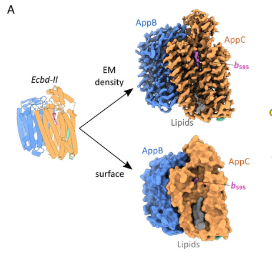
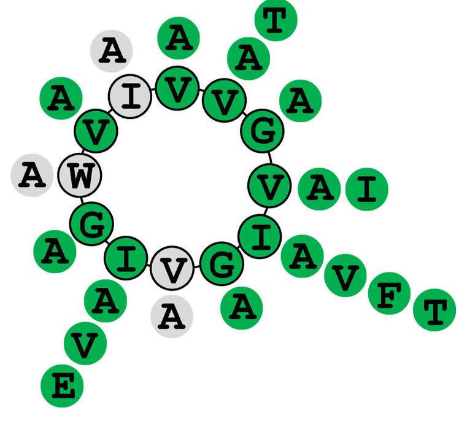
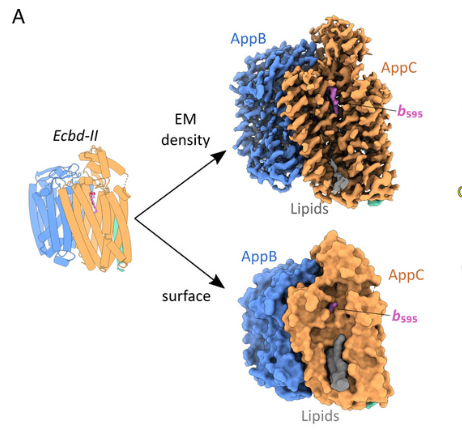
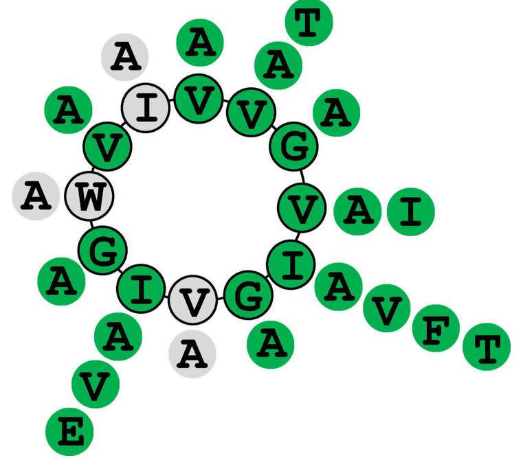

Education & Experience
F. Hoffmann-La Roche | Junior Project Manager Knowledge Management
- Document management solutions - technical support, ontologies, automation.
- Business intelligence data analytics and visualization.
- ETL pipelines, Interactive visualizations, Data science and Data engineering.
ETH Zürich | Master Thesis - Multiomics for Integrin Mechanosensing
- Single cell RNA sequencing to study integrin signaling in mammalian cells.
- Developed novel protocols for physical confinement of mammalian cells.
- Multi-omics data analysis and integration.
Esther Goeltzer Augenoptik & Optometrie | Shiny app developer
- R Shiny applications for automated analysis and visualization of diagnostic data.
ETH Zürich | Research Project - Statistical models of genetic circuits
- Nonlinear mixed-effects models of cell-to-cell variability in synthetic gene circuits.
- Deterministic simulations of microbial populations and statistical analysis.
ETH Zürich | Master of Science - Biotechnology
GPA: 5.86/6, Summa cum laude
Skills
Labwork:
Molecular techniques & Protein biochemistry
Data science & Statistics:
Python, R, SQL
Sequencing technologies & Data analysis
At Roche, I completed PM courses, covering advanced methodologies to efficiently oversee long-term projects and subtasks.
constantly seeking opportunities to expand my skill set and adapt to evolving demands.
complex scientific problems, integrating insights from data science, biology, and statistics.
a range of collaborators and stakeholders,
supported by strong oral and written communication skills.
I prioritize careful planning and meticulous execution to ensure
all details are accounted for and experiments are set up for success.
Projects
 



Master's thesis - Multiomics for Integrin Mechanosensing
In this thesis, I examined how integrin signaling impacts cellular behaviors,
focusing on gene expression changes induced by integrin-mediated mechanotransduction.
Integrins, which mediate cell adhesion and signal transmission from the extracellular matrix,
play vital roles in cell migration and proliferation.
Using transcriptome sequencing on fibroblast cell lines with specific integrin receptors knocked out,
I observed significant alterations in ECM and cytoskeletal gene expression upon fibronectin exposure.
The analysis also uncovered genes linked to immune response, neural development, and disease pathways,
offering potential new avenues for therapeutic targeting.
Additionally, I developed a novel approach combining cellular confinement with single-cell transcriptomics,
enhancing our ability to study mechanosignaling at the mRNA level.
This method holds promise for understanding disease processes like cancer metastasis, where cellular mechanics play a crucial role.
Skills:
- Cell culture
- Omics data analysis (Genomics, Transcriptomics, sc RNA data)
- Integrin mechnobiology
Research project - Statistical Models of Genetic Circuits
In this project, I investigated the role of negative feedback in enhancing robustness in gene expression,
specifically focusing on noise reduction mechanisms on a population level.
Biological noise, influenced by factors like environmental changes and molecule concentrations,
can disturb cellular function. Negative feedback was explored as a strategy to dampen this noise,
achieving stability in cellular outputs.
I modeled these feedback mechanisms using deterministic ordinary differential equations (ODEs)
to capture temporal changes and noise propagation across cells. By varying parameters in simulated autoregulatory networks,
I identified how specific feedback strengths impact noise and cell-to-cell variability in a heterogenous population. This research provides insights for fine-tuning synthetic gene circuits to optimize stability and performance.
Skills:
- Deterministic simulations (ODEs implemented in R and C++)
- Statistics (population level analysis)
- Synthetic biology (Genetic circuits, Feedback control)
Bachelor's thesis - Development of a label free thermal shift assay
In this thesis, I investigated a new method for analyzing the binding of Aurachin-derived inhibitors to cytochrome bd oxidases,
crucial enzymes involved in aerobic respiration and pathogenesis.
Cytochrome bd oxidases are of particular interest as they help bacteria adapt to environmental stresses and are linked to virulence,
making them a potential target for antibiotic development. Using a modified thermal shift assay with nanoscale differential scanning fluorimetry,
I was able to characterize the binding of an Aurachin-type inhibitor, AD 6-1, to Escherichia coli cytochrome bd I oxidase.
The assay, optimized for buffer composition and solvent, revealed a concentration-dependent shift in the enzyme's unfolding profile,
suggesting a specific interaction.
Interestingly, our observations combined with functional assays hinted at complex binding dynamics.
This novel assay provides a promising platform for future drug discovery targeting bd-type oxidases in various pathogenic bacteria.
The results can be found here:
Short-chain aurachin D derivatives are selective inhibitors of E. coli cytochrome bd-I and bd-II oxidases. Sci Rep 11, 23852 (2021).
I further contributed to solving the protein structure of another protein, the bd II oxidase. This resulted in a coauthorship on the PNAS publication highlighting the obtained insights:
Mechanistic and structural diversity between cytochrome bd isoforms of Escherichia coli. Proc. Nat. Acad. Sci. 2021; 118 (50) e2114013118
Skills:
- Binding assays
- Structural biology (Cryo-EM)
- Biophysics (Docking, Binding kinetics, Protein stability)
Investigating the promiscuity of enzymes involved in the omphalotin biosynthesis
This study explored the enzymatic modification of Omphalotin A,
a cyclic peptide produced by Omphalotus olearius, focusing on how sequence changes in its core peptide affect methylation and cleavage processes.
Omphalotin A, modified by the methyltransferase domain within its precursor protein OphMA and processed by the enzyme OphP,
serves as a prototype for the borosin family of fungal natural products. By coexpressing mutated forms of OphMA and OphP in Pichia pastoris,
I analyzed how variations in core peptide sequences influenced enzymatic activity, observing shifts in methylation and cleavage patterns via mass spectrometry.
Additionally, I established culture conditions for various fungi with homologous methyltransferases, discovering a new N-methylated cyclic peptide from D. bispora.
This work highlights the potential of borosin-producing fungi to yield bioactive compounds with agricultural and pharmaceutical applications.
The results have been published here:
Enzyme-mediated backbone N-methylation in ribosomally encoded peptides. Methods Enzymol. 2021;656:429-458.
Promiscuity of Omphalotin A Biosynthetic Enzymes Allows de novo Production of Non-natural Multiply Backbone N-Methylated Peptide Macrocycles in Yeast. ChemBioChem 2023; e202300626
Skills:
- Mutagenesis, Molecular cloning
- Microbiology (E. coli, P. pastoris)
- Peptide analytics (Mass spectrometry)